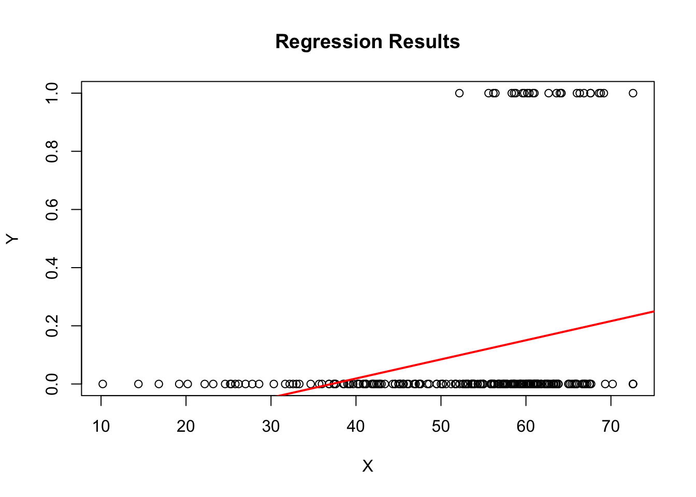

Code
library(tidyverse)
library(readxl)
library(summarytools)
library(ggplot2)
library(magrittr)
knitr::opts_chunk$set(echo = TRUE)library(tidyverse)
library(readxl)
library(summarytools)
library(ggplot2)
library(magrittr)
knitr::opts_chunk$set(echo = TRUE)PA_Dispensary_License_Data_tab <- read_excel("~/Downloads/PA Dispensary License Data.tab.xlsx")
head(PA_Dispensary_License_Data_tab, 10)# A tibble: 10 × 22
phase dispens…¹ name diver…² opera…³ quali…⁴ secur…⁵ trans…⁶ storage label…⁷
<dbl> <chr> <chr> <dbl> <dbl> <dbl> <dbl> <dbl> <dbl> <dbl>
1 1 D-1001-17 BHS … 31 70.4 25.6 50.2 11.8 24.4 16.4
2 1 D-1003-17 Prim… 68 64.8 35.6 56.2 16 37.8 18.2
3 1 D-1004-17 Keen… 65 63.8 32.4 72.2 12.4 30.8 13.6
4 1 D-1006-17 Grow… 34 48 27.2 48.4 13 20.6 14.4
5 1 D-1007-17 Heal… 25 51.4 26.2 51.4 13.2 23.4 14.2
6 1 D-1009-17 Elem… 40 66 27.8 65.6 18.6 32.4 15.8
7 1 D-1010-17 420 … 60 29.6 21 32.6 9.6 16.2 9.6
8 1 D-1011-17 Pali… 38 48 31.6 56.8 6.2 26.4 16.6
9 1 D-1012-17 The … 32 24.8 29.2 56.4 15 26.2 14.6
10 1 D-1013-17 Elem… 40 66.4 31.4 65.6 18 32.6 17.2
# … with 12 more variables: inventory <dbl>, diversion <dbl>, sanitation <dbl>,
# recordkeeping <dbl>, history <dbl>, capital <dbl>, community <dbl>,
# siteplan <dbl>, personalid <dbl>, awarded <dbl>, licensed <dbl>,
# dispensaries <dbl>, and abbreviated variable names ¹dispensarynumber,
# ²diversityplan, ³operationaltimetable, ⁴qualifications, ⁵security,
# ⁶transportation, ⁷labelingThe data set includes various companies that applied for a dispensary license in 2018. There are 16 categories that are added up to a total score. The score is used to determine whether or not the company will receive a license to operate a dispensary.
PA_Dispensary_License_Condensed<-PA_Dispensary_License_Data_tab %>%
select(name, diversityplan, qualifications, security, capital,licensed, awarded)
head(PA_Dispensary_License_Condensed, 10)# A tibble: 10 × 7
name diver…¹ quali…² secur…³ capital licen…⁴ awarded
<chr> <dbl> <dbl> <dbl> <dbl> <dbl> <dbl>
1 BHS Wellness, LLC 31 25.6 50.2 28.6 0 471
2 Prime Wellness of Pennsylvan… 68 35.6 56.2 67.2 0 644
3 Keen Meds, LLC 65 32.4 72.2 59.2 0 608.
4 Grow Ventures Penn, LLC 34 27.2 48.4 53.6 0 468.
5 Healing Hope, LLC 25 26.2 51.4 37.4 0 478.
6 Elemental Health Group, LLC 40 27.8 65.6 62.6 0 646.
7 420 Nature's Root 60 21 32.6 41.2 0 396.
8 PaliaTech PA, LLC 38 31.6 56.8 50 0 512.
9 The Natural Dispensary, LLC 32 29.2 56.4 51.8 0 492.
10 Elemental Health Group, LLC 40 31.4 65.6 56.2 0 618.
# … with abbreviated variable names ¹diversityplan, ²qualifications, ³security,
# ⁴licensedI grouped the data set into several categories that I will focus on in this project and in future projects.
ggplot(PA_Dispensary_License_Condensed, aes(x = capital)) +
stat_ecdf(geom = "step") +
labs(x = "capital", y = "Cumulative Probability") +
ggtitle("Cumulative Density Function for Capital") +
theme_minimal()Warning: Removed 136 rows containing non-finite values (`stat_ecdf()`).The CDF provides information about the cumulative probability of the variable capital taking on certain values or being less than or equal to a specific value. Specifically, for any given value x of capital, the CDF tells us the probability that capital is less than or equal to x.
By examining the CDF for capital, we can understand the distribution of the variable. In this case, the majority of the values of capital sit around the 45-70 range on the x-axis. There are not as many variables under 40. On the other hand, the CDF increases gradually, it indicates a more uniform distribution of capital across its range, Additionally, the shape of the CDF can provide insights into the central tendency, spread, and skewness of the capital variable.
In summary, the CDF for the variable capital helps us understand the probability distribution of capital, assess the likelihood of specific values or ranges, and calculate percentiles or quantiles.
ggplot(PA_Dispensary_License_Condensed, aes(x = licensed)) +
stat_ecdf(geom = "step") +
labs(x = "Licensed", y = "Cumulative Probability") +
ggtitle("Cumulative Density Function For Licensed Variable") +
theme_minimal()Contrary to above, the CDF for Licensed shows a dramatic increase. It still has a vague shape of of the cumulative density function, but since the variable in binary, it does not neatly plot.
ggplot(PA_Dispensary_License_Condensed, aes(x = capital, fill = licensed)) +
geom_density(alpha = 0.5) +
labs(x = "Capital", y = "Density", fill = "licensed") +
ggtitle("Probability Density Function") +
theme_minimal()Warning: Removed 136 rows containing non-finite values (`stat_density()`).Warning: The following aesthetics were dropped during statistical transformation: fill
ℹ This can happen when ggplot fails to infer the correct grouping structure in
the data.
ℹ Did you forget to specify a `group` aesthetic or to convert a numerical
variable into a factor?The PDF shows that the distribution of the variables Capital and Licensed is skewed left, also known as a negative-skewed distribution. This means that the tail of the distribution extends towards lower values.
In the case of the variables Capital and Licensed, a left-skewed distribution indicates that there is a concentration of higher values for Capital and a smaller number of lower values. It suggests that the proportion of observations with a value of Licensed equal to 1 may be higher compared to the proportion with a value of 0.
When plotting the PDF, you will notice a longer tail on the left-hand side of the distribution. The majority of data points will be clustered towards the higher end of the Capital variable, with progressively fewer observations occurring as the values decrease.
It’s important to keep in mind that skewness only describes the shape of the distribution and does not imply any causality or the direction of a relationship between the variables.
### Find Summary Statistics
avg <- PA_Dispensary_License_Condensed%>%
group_by(licensed)%>%
summarise(
sd_capital = sd (capital, na.rm=TRUE),
max_capital = max(capital, na.rm = TRUE),
min_capital = min(capital, na.rm = TRUE),
avg_capital = mean (capital, na.rm = TRUE),
med_capital = median(capital, na.rm = TRUE),
n_capital = n())
### Average into own variables
Licensed_avg <- avg %>% dplyr::filter(licensed == 1) %>% pull(avg_capital)
Unlicensed_avg <- avg %>% dplyr::filter(licensed == 0) %>% pull(avg_capital)
### Separate Standard Deviation into own variables
Licensed_sd <- avg %>% dplyr::filter(licensed == 1) %>% pull(sd_capital)
Unlicensed_sd <- avg %>% dplyr::filter(licensed == 0) %>% pull(sd_capital)
### Separate n() into own variables
Licensed_n <- avg %>% dplyr::filter(licensed == 1) %>% pull(n_capital)
Unlicensed_n <- avg %>% dplyr::filter(licensed == 0) %>% pull(n_capital)
### statistical equations
score_diff <- Licensed_avg - Unlicensed_avg
se <- sqrt(Licensed_sd^2/Licensed_n + Unlicensed_sd^2/Unlicensed_n)
ci_lic_l <- score_diff - 1.96* se
ci_lic_u <- score_diff + 1.96 * se
### Data Frame with all of the results neatly labeled
results <- data.frame(
Licensed_avg = Licensed_avg,
Unlicensed_avg = Unlicensed_avg,
Licensed_sd = Licensed_sd,
Unlicensed_sd = Unlicensed_sd,
Licensed_n = Licensed_n,
Unlicensed_n = Unlicensed_n,
score_diff = score_diff,
se = se,
ci_lic_l = ci_lic_l,
ci_lic_u = ci_lic_u
)
print(results) Licensed_avg Unlicensed_avg Licensed_sd Unlicensed_sd Licensed_n Unlicensed_n
1 62.59296 52.37786 4.955124 12.3944 50 337
score_diff se ci_lic_l ci_lic_u
1 10.21511 0.9730951 8.307839 12.12237The above table captures the averages, standard deviation, the number, the difference of means, the standard error and the confidence intervals. The show the relationships between capital scores of companies that received a licensed and those who did not receive a license. Capital has a confidence interval of 8.307839 to 12.12237 when grouped by license, it means that we are estimating a range of plausible values for the average capital depending on the group (licensed).
Specifically, this confidence interval provides an estimate of the range within which we can be reasonably confident that the true average capital falls, based on the data and statistical analysis. The confidence interval suggests that we are 95% confident that the true average capital for the respective groups falls between the values of 8.307839 and 12.12237. Note the confidence interval is the upper and lower bounds of the differences in the sampe means, not the actual X values. # Scatterplot with Data
### Scatterplot using GGplot
ggplot(PA_Dispensary_License_Condensed, aes(x = capital, y = licensed, na.rm=TRUE)) +
geom_point() +
labs(x = "Capital", y = "Licensed")Warning: Removed 136 rows containing missing values (`geom_point()`).The above scatter plot shows the relationship between capital score and dispensaries that received a license. As you can see, the graph does not do a great job showing the relationship since the licensed variable is binary. This will be built on in future projects when other regressors are added.
ggplot(data = PA_Dispensary_License_Condensed, aes(x = capital, fill = factor(licensed))) +
geom_bar() +
labs(x = "Capital", y = "Count", fill = "Licensed") +
ggtitle("Bar Chart: Capital vs Licensed")Warning: Removed 136 rows containing non-finite values (`stat_count()`).I have included this bar chart to further visualize the relationship between the capital score and whether or not they received a license.
###Find confidence interval of of licensed vs unlicensed
confidence_level <- 0.95
ci <- t.test(PA_Dispensary_License_Condensed$capital ~ PA_Dispensary_License_Condensed$licensed, conf.level = confidence_level)$conf.int
print(ci)[1] -12.731131 -7.699081
attr(,"conf.level")
[1] 0.95### Alternative method for automatically finding the standard error based on the T.Test
result_se <- t.test(PA_Dispensary_License_Condensed$capital ~ PA_Dispensary_License_Condensed$licensed)
standard_error <- result_se$stderr
print(standard_error)[1] 1.263008The above standard error and confidence intervals are additional tests showing the accuracy of the values calculated above. As you can see, the values are almost the exact same within a tenth of a decimal point. #Regression Analysis
linear_model<-lm(licensed ~ capital, data = PA_Dispensary_License_Condensed)
summary(linear_model)$coefficient Estimate Std. Error t value Pr(>|t|)
(Intercept) -0.244278261 0.085204568 -2.866962 4.499059e-03
capital 0.006579464 0.001553339 4.235692 3.209303e-05### Have to plot it differently
plot(PA_Dispensary_License_Condensed$capital, PA_Dispensary_License_Condensed$licensed, main = "Regression Results", xlab = "X", ylab = "Y")
abline(linear_model, col = "red", lwd = 2)
In summary, a T-value of 4.235692 for the independent variable capital in a simple regression with the dependent variable licensed indicates a strong relationship between the variables, and the relationship is statistically significant based on the chosen level of significance. In this case, the p-value is extremely small and less than one 1%. The chosen level of significance for this case would be P<.05. More specifically, if the p-value is below the predetermined significance level, it suggests that the probability of observing the results under the null hypothesis are very low. In such cases, it is generally concluded that there is a statistically significant relationship in the data.
For each unit increase in the capital variable, there is an estimated increase of approximately 0.006579464 in the probability or likelihood of the licensed variable being equal to 1, assuming all other factors are held constant.
In plain English, this means that as the capital variable increases, the estimated effect is a slight increase in the probability of having a value of 1 for the licensed variable. However, since the coefficient is very small (0.006579464), the practical significance of this effect may be limited.
Since the dependent variable is a dummy (binary) variable, the regression line does not fit that nicely on the plot. I did some additional research and found that a curve is more fitting for this type of variable. # Regression Analysis With Binary Variable
### Regression Graph for Dummy Dependent Variable
model <- glm(licensed ~ capital, data = PA_Dispensary_License_Condensed, family = binomial)
plot(PA_Dispensary_License_Condensed$capital, PA_Dispensary_License_Condensed$licensed, main = "Regression Plot of Licensed vs. Capital", xlab = "Capital", ylab = "Licensed")
### This code adds a curve instead of a standard line(abline) for regression of dummy dependent variables
curve(predict(model, data.frame(capital = x), type = "response"), add = TRUE, col = "red")
In the above plot, I used a general linear model to predict the curve of the dummy variable. This is a much cleaner plot that the original regression line above. This more closely illustrates the relationship between capital score and licensing outcome.